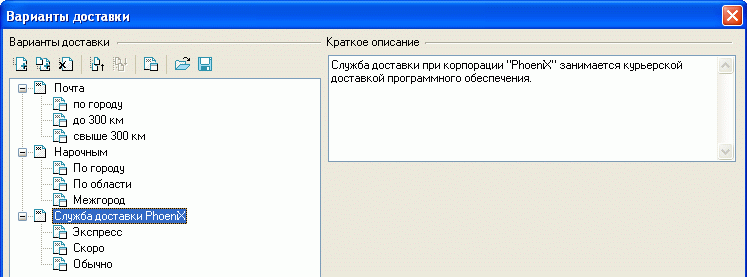
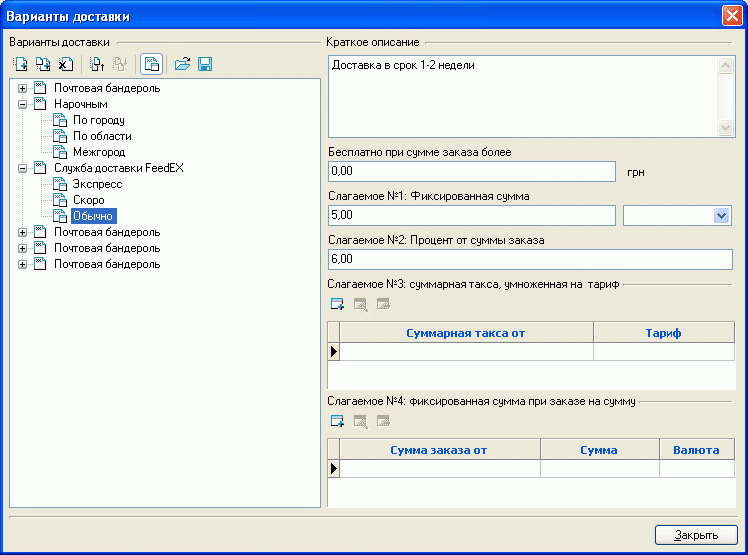
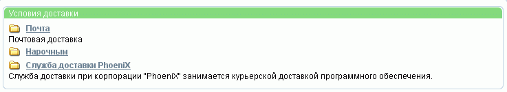
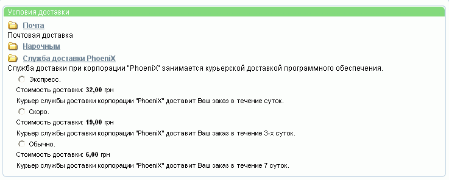

Исходя из существующих возможностей, покупателю может быть предложено несколько вариантов доставки товаров. Но предварительно необходимо эти варианты задать.
В левой части окна "Варианты доставки", вызываемого из главного окна "Настройки - Варианты доставки", отображается дерево вариантов доставки. Варианты доставки могут группироваться в разделы. Разделы и сами варианты доставки можно добавлять, удалять, переименовывать, группировать, сортировать.

Для обозначения того, чем - разделом или вариантом доставки - является вновь созданный объект, служит кнопка , расположенная над деревом вариантов доставки. Раздел не имеет своих значений, а только группирует схожие подразделы или варианты доставки. Вариант доставки имеет ряд значений и описаний, для задания которых в правой части окна вариантов доставки появляется форма:

Перечни значений стоимости доставки (Слагаемое №3 или Слагаемое №4) для одного варианта могут быть скопированы в другой вариант. Для этого выделяются требуемые значения и при нажатой клавише "Ctrt" "перетягиваются" мышью на другую доставку. Если в варианте доставки, на который "перетягивается" другой, уже есть значения, они корректируются.
Покупателю, при его желании оформить заказ, будет выдана страница с параметрами заказа, среди которых имеется пункт "Условия доставки", где приводятся все возможные варианты доставки (дизайн иллюстраций может отличаться от приведенного):

Щелкнув на выбранный вариант, можно увидеть конкретные значения данного варианта с указанием подлежащей оплате суммы:
